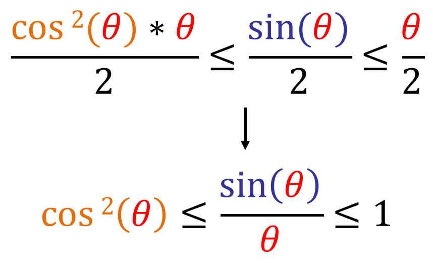

Suppose I have a circle with radius 1 and I want to find the area of the pink region bounded by the purple line and the x-axis:
Let point M be the point where the purple line touches the circle and let point N be the point where the x-axis touches the circle. The formula for finding the area of a sector of a circle with raduis 1 is:
Now lets make a triangle by connecting points M and N:

Since the height of this triangle is [sin(θ)] and the base is 1, then the area of the triangle is:
We know that A2 ≤ A1. Now lets create a smaller circle inside the main circle which has the radius of [cos(θ)]:
The area bounded by the purple line in the smaller circle and the x-axis has the following equation:
We know that A3 ≤ A2 ≤ A1, which can be written as:
Now lets take the limit of all sides as x approaches 0:
Since [limθ->0 (cos(θ)) = 1], then limθ->0 (sin(θ)) cannot be anything else but 1.